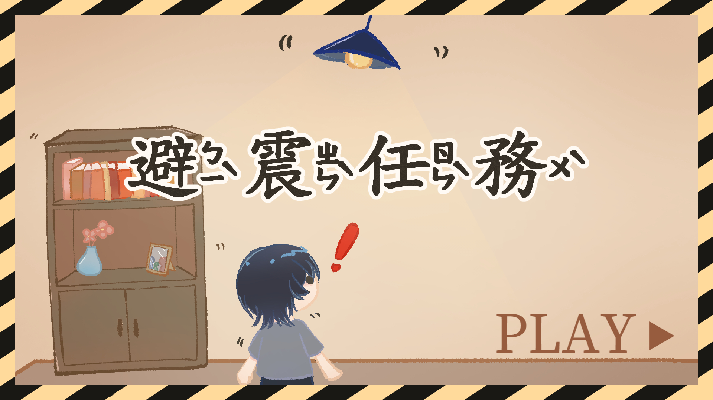

01 / DIGITAL GAME
避震任務
以防震知識為主題，透過第一人稱情境模擬防震避難。我主要負責美術設計，並與組員合作使用 Construct 3 製作遊戲及規劃學習回饋。
作品內容與製作歷程
設計方向
以防震知識為主題，將防震避難概念轉化為第一人稱情境模擬遊戲，讓學習者透過情境操作接觸相關知識，而不只是閱讀文字說明。
製作內容
作品以 Construct 3 製作，透過遊戲情境呈現防震避難任務。我主要負責美術設計，並與組員共同討論遊戲內容、操作流程及學習回饋。
設計思考
在遊戲製作過程中，需要同時考量畫面呈現、操作方式與學習內容之間的連結，讓視覺設計能協助學習者理解情境，並使遊戲操作服務於學習目標。